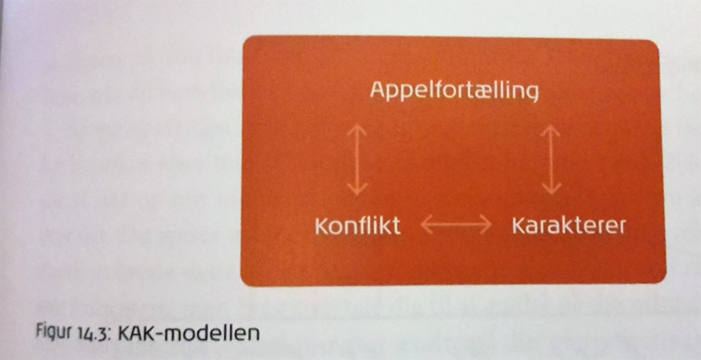

Storytelling som brandingstrategi
Storytelling er en kommunikationsdisciplin, som anvender historier som et kommunikationsværktøj. En af fordelene ved storytelling er, at det taler til hjertet og ikke hjernen. Dette gør at personer og handlinger inddrages, hvilket skaber identifikationsmuligheder mellem afsender og modtager.
Derudover skabes der billeder i modtagerens hoved; dette er et journalistisk trick, der siger Don’t tell it – show it.
(Online Kommunikation - En Introduktion kap. 4 s. 151-183)
I storytelling kan man benytte sig af KAK-modellen:

- Appelfortælling: Brandet retter en følelsesmæssig appel til målgruppen – hvilken fortælling tilbydes, som målgruppen kan være en del af?
- Konflikt: Hvilke typer konflikter er i spil?
- Karakterer: Hjælpere, helte og modstandere – hvilke karakterer er i spil?
Denne model bruges til at afklare funktionerne i en fortælling, og er en envejskommunikationsmodel.
(Kommunikation i Multimediedesign kap. 14 s. 217)
Historiefortællerens værktøjskasse
Historiefortællingen indeholder fire elementer, som der bør være opmærksomhed på, når der arbejdes med storytelling:
- Budskab: Der bør altid overvejes hvilket budskab der ønskes at kommunikere med historien. Jan Krag Jakobsen, adjungeret professor, anbefaler at der kun er ét budskab per kommunikationsprodukt, og at dette formuleres i en enkelt sætning
- Konflikt: Dette er historiens omdrejningspunkt og hænger tæt sammen med plottet. Konflikter appellerer til instinktet om at finde en løsning, og konflikten fanger derfor modtagerens interesse
- Rollefordeling: Det er nødvendigt at bruge en række aktanter, for at historien kan udspille sig: Greimas’ aktantmodel
- Handling: Der skal tages stilling til hvordan handlingen skal forløbe sig, og hvad ”belønningen” i sidste ende er:
(Online Kommunikation - En Introduktion kap. 4 s. 160-169)
De 7 arketypiske fortællinger
Der findes naturligvis utallige måder at variere sin historie på, men den engelske journalist og forfatter Christopher Booker argumenterer for at der reelt kun findes syv forskellige grundtermer:
- Besejring af uhyret: En skurk, som ikke blot truer helten men hele samfundet eller menneskeheden, præsenteres for læseren. Skurken er overvældende i sin styrke og synes først umulig at besejre; dette tema er karakteriseret ved heltens nervepirrende flugt fra døden, og i sidste ende fantastiske sejr, samt befrielse af samfundet eller menneskeheden
- Fra laser til luksus: Her møder modtageren en helt almindelig og ubetydelig person, som pludselig får hovedrollen og viser at være helt enestående; temaet er centreret om den oversete person, som med ét går en strålende fremtid i møde
- Den farefulde rejse: Helten får kendskab til et mål der skal overvindes. Målet ligger langt borte og rejsen dertil er farefuld; målet er som regel noget betydningsfuldt og intet offer er for stort at bringe, for at nå det.
- Rejsen til en anden verden og hjemkomst: I dette tema rejser helten hjemmefra og oplever en ganske anden, underholdende verden. Men langsomt opdager helten at denne verden ikke er som den først syner, men han er fanget. Via en nervepirrende flugt lykkedes det helten at vende hjem til sine velkendte rammer.
- Komedie: Den moderne komedie er et kaos af misforståelser, der har til formål at underholde læseren. Et velkendt omdrejningspunkt til denne type fortælling er en romance; parret er som regel diametrale modsætninger, og der bliver skabt en sand omgang kluddermor af misforståelser, der til sidst bliver løst og alt ender lykkeligt.
- Tragedie: Kendetegnet ved en tragedie er en ulykkelig slutning. I starten af historien synes alle hovedpersonens, ultimativt forbudte, handlinger at lykkedes i en drømmeagtig succes, men langsomt skal der endnu flere og være forbrydelser til, for at hovedpersonen kan sikre sin position. Dette leder i sidste ende til hovedpersonens fald.
- Genfødsel: I dette tema rammes helten af en forbandelse, som indespærrer denne i et fysisk eller psykisk fængsel; heltens tvinges til at leve sit liv hæmmet af forbandelsen i mange år, indtil der pludselig opstår en mirakuløs frelse, ofte med hjælp fra en anden karakter, som frisætter helten.
(Online Kommunikation - En Introduktion kap. 4 s. 169-172)
Isbjergmodellen som storytellingsværktøj
Det er meget hurtigt at kommunikere med målgruppen ved hjælp af billeder; kulturelle koder i billedsprog kan trække på fortællinger om lykke, glæde, arbejde osv.
Her kan isbjergmodellen være behjælpelig;
”Isbjergmodellen viser, at kultur er som et isbjerg. Det er kun 10 % af kulturen, der er synlig, mens de resterende 90 % er skjult under overfladen. Det er således kun en lille del af kulturen, som vi kan se”
Kilde
(Kommunikation i Multimediedesign kap. 14 s. 221-222)